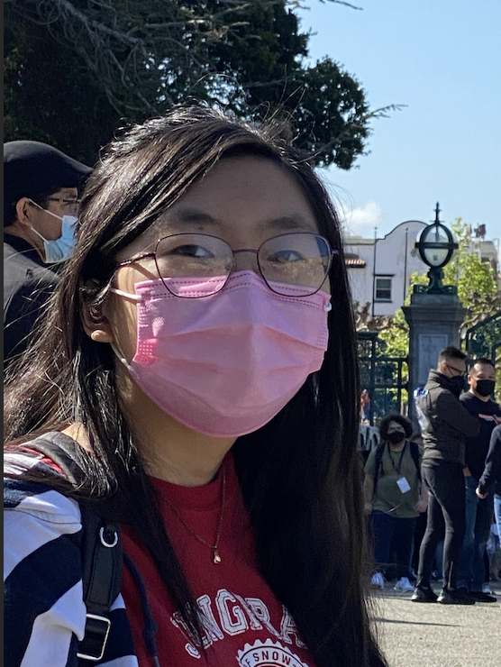

Chloe Lin
EECS Major ⋅ 1st Year
Hey! I'm Chloe (alternatively spelled kalaoe due to usernames being taken and it
generally being the way people pronounce my name in Chinese). I'm a huge fan of
both programming and art, hence why I'm here! Talk to me about anything
art/design/programming related and I'll be happy to chat!
PS: If you don't recognize me by face (which I get, there's like 40K students on
campus and I'm also terrible at facial recognition), remember me by my pink mask
:P
Favorite places to eat at Berkeley:
- Sheng Kee ⭑
- Sweetheart Café
- Poké Bar

Checkbox Race
Reading Responses
Web Design Principles Article
-
I learned that there's a lot more to design than I had originally given it
credit for! While things like clear focal points, color scheme, and
accessibility are incredibly important parts of design, even more minute
things like wording, organization, and subtle emphasis of information are
important to consider.
-
I loved how Warner began breaking down the design choices that both Airbnb
and Twitter made with specific examples. While I knew that studying
existing successful apps was important, I was thinking on a much broader
scale than what was demonstrated. I was thinking about points of interest,
color scheme, and the like, but what I didn't realize was that more subtle
things like Airbnb's "Try 'London'" on its search bar could also make a big
difference.
-
"I wonder how many iterations they tried with Dates and Guests only being
visible at a later point in the flow. I’m sure many designs have gone
through explorations where the Dates aren’t presented until you select a
location. This makes me curious about how people search and when they
introduce filters to their searches." - I love how the writer presents what
she is thinking when she sees this design choice which I previously
wouldn't have given a second thought!
-
10/10 - Brief, but one of the most (if not the most) informative
articles I've read about web design!